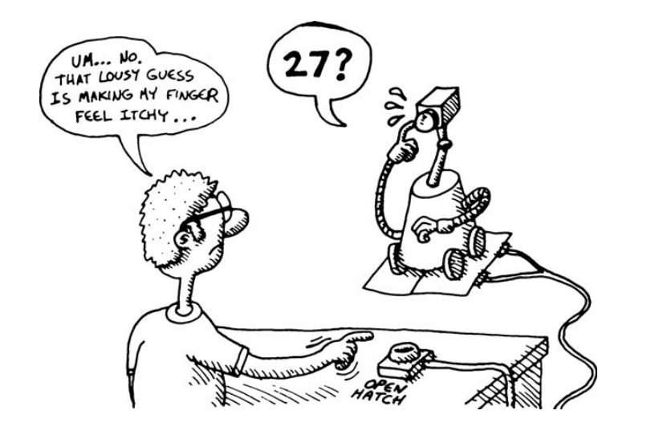
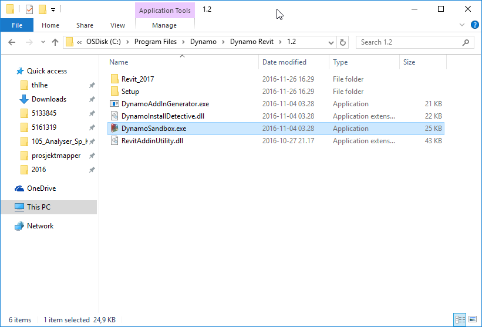
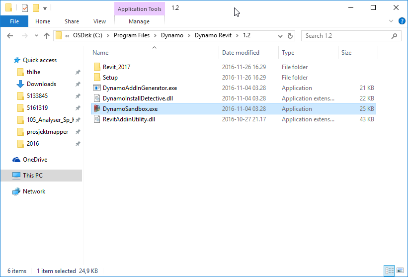

Programmering i Python
Norconsult - Sandvika 2016
Hva ser jeg nå?
Nettleseren Chromium som viser nettsiden https://teodorlu.github.io/python-intro/ i fullskjerm.
Gå inn her på egen maskin! Da kan du se tidligere lysbilder, og er ikke avhengig av hvor vi er.
Hva gjør jeg nå?
Du er på Python-kurs! Kurs med fartstid:
- Lærerkonferanse Teknologihuset, juni 2016
- Kodeklubben høsten 2016
- Lærerkonferanse Teknologihuset, november 2016
- Lærerkonferanse Gardermoen, november 2016
- Internkurs Norconsult, Sandvika, november 2016
Intensjon for presentasjon
Ryddig første vei inn i Python-programmering
Referanse til videre bruk.
Hvem er vi?
Teodor Heggelund

Alexander Perry

Hvorfor Python?
For begynnere
Forståelig syntaks med lite støy:
og viderekommende
- Støtter imperativ, objektorientert og funksjonell programmering
- Knallgodt standardbibliotek
Driver New York Times

Brukes av NASA

Brukes av Google

Verktøy
Hva trenger vi?
Når vi utvikler Python, trenger vi to verktøy:
- Et skall
- En teksteditor
Når vi installerer programmeringsspråket Python, følger miljøet IDLE med. IDLE gir oss et skall og en teksteditor.
Last ned Python
- Gå til python.org/downloads
- Last ned og installer nyeste Python (
3.x.x)
Python-skallet i IDLE
Et skall lar oss skrive en linje og tolke den.

Python-skallet i IDLE
Tre piler (>>>) dukker automatisk opp i skallet. Når vi skriver tre piler her:
>>> 4 + 4
8skal du skrive 4 + 4 og trykke enter.
Teksteditoren i IDLE

Teksteditoren i IDLE
Vi åpner teksteditoren ved å lage en ny fil fra Python-skallet:
File –> New file (Ctrl+N) gir oss en tom fil:

Teksteditoren i IDLE
Først lagrer vi filen der vi vil ha den, og kaller den hello.py …

Teksteditoren i IDLE
… så kjører vi den for å se at alt er i orden …

Teksteditoren i IDLE
… og en tom fil gjør … ingenting.

Variabler
Hva er en variabel?
- Tilordner verdier til navn, for gjenbruk
Variabler i Python
Oppgave: familiens alder
Lagre alderen til 3 familiemedlemmer i variabler
tim_age = 19 teodor_age = # ... # ... og så videre # Dette er en kommentar. Python ignorerer # alt som kommer etter en hash (#)- … og test at du får tilgang til variablene i skallet.
- Lagre summen av alderene i en variabel
- … og test at du får tilgang til summen i skallet.
- Lagre gjenomsnittet av alderene i en variabel
- … og test at du får tilgang til gjennomsnittet i skallet.
Tekstmanipulering
Tekstmanipulering
Tekstmanipulering
Stemningen i Python
Navnet?


Fra XKCD.
If
Hvis sant, …
Hvis x, gjør y.
Følgende i fil:
gir følgende ut:
Over if
Over 2000!
Under ifDokumentasjonen til Python 2.7 eller Python 3.5 forklarer hvordan å bruke æøå i fil.
Hvis usant, …
Hvis ikke x, gjør ingenting.
Følgende i fil:
aar = 1999 # Bruker ikke norske bokstaver
print("Over if")
if aar > 2000:
print("Over 2000!")
print("Under if")gir følgende ut:
Over if
Under if… ellers
Følgende i fil:
aar = 1999 # Bruker ikke norske bokstaver
print("Over if")
if aar > 2000:
print("Over 2000!")
else:
print("Under 2000!")
print("Under if")gir følgende ut:
Over if
Under 2000
Under ifOppgave: Gammel nok?
Lag et program som
- Lagrer en alder i en variabel
- Skriver ut “Du er ikke gammel nok” dersom alderen er under 18 år
Funksjoner
En Python-funksjon
Den viktigste byggeblokken i programmene vi skriver.
Definér hei() i en fil:
og test den i skallet:
En funksjon til
fordi funksjoner er viktig.
Definerer i fil:
Vi bruker variabler i funksjoner for å splitte arbeidet i mindre biter.
… og tester i skallet:
>>> tusen
<function tusen at 0x7f8c0f500668>
>>> tusen()
1000Bruke funksjoner
Funksjoner må defineres før de brukes.
gir
Traceback (most recent call last):
File "<stdin>", line 1, in <module>
File "func_fail.py", line 1, in <module>
message = hei()
NameError: name 'hei' is not definedBruke funksjoner.
Funksjoner må defineres før de brukes.
er OK.
Parameter
- En parameter er et navn som “sendes” inn i funksjonen:
- Funksjonen
fif(x)harxsom parameter - Funksjonen
gig(x,y)harxogysom parametre
- Funksjonen
Parametrisering
- Å parametrisere er å endre kode til å bruke funksjoner og parametre.
Myndig
Myndig
Kalkulator
Kalkulator
Oppgave
- Lag en kalkulator som tar inn to tall og en operator, og som returnerer svaret
- Prøv med operatorene +, -, * og \
Tips: Bruk if-setninger!
Input / output
Hva er input / output?
- Kommunikasjon med verden uten å bruke IDLE
- … Når andre enn du skal bruke programmet ditt!
Input / output i Python
Å lese inn tall
- Funksjonen
input()gir ut tekst - Funksjonen
int()konverterer tekst til tall
Å skrive ut tall
- Funksjonen
str()konverterer tall til tekst
Oppgave: familiens alder 2
Nå skal vi utvide oppgaven fra tidligere. I stedet for å lagre alderen til familiemedlemmer i programmet, spør brukeren! Skriv så ut gjennomsnitt og total alder.
Funksjoner vi har brukt:
Lister
Hva er lister?
- Lister lar oss samle mange verdier
- Google gir oss en liste av søkeresultater
- Facebook har lister over e-postadresser
Lister i Python
Lister i Python 2
>>> mine_tall = [1,2,3,42,1337,-55] # Samme som før
>>> mine_tall[6]
Traceback (most recent call last):
File "<stdin>", line 1, in <module>
IndexError: list index out of range
>>> mine_tall
[1, 2, 3, 42, 1337, -55]
>>> mine_tall[2:]
[3, 42, 1337, -55]
>>> mine_tall[:2]
[1, 2]
>>> mine_tall[2]
3
>>> [1, 2, 3] + [10, 11, 12]
[1, 2, 3, 10, 11, 12]Oppgave: elementer fra liste
Gjør følgende i Python-skallet:
- Lag en liste som inneholder 5 tall
- Hent første tall
- Hent nest siste tall
Tips: list[-3] henter element 3 bakfra!
While
Hva er while-løkker?
- Kjører en kodesnutt så lenge et gitt uttrykk er sant
- Kan kjøre evig, og avbrytes med break
While-løkker i Python
Oppgave: mattespill!
Lag et multiplikasjonsspill!
- Be brukeren gange to tall
- Sjekk svaret!
- Gjør dette mange ganger …
while?
Tilfeldige tall:
For
Hvorfor?
for gjør noe med hvert element i en liste:
For i skallet
For på én linje er fint i skallet:
For i kildekode 1
I kildekode legger vi for over flere linjer:
skriver ut
101
Hei!
102
Hei!
103
Hei!For i kildekode 2
mange_tall = [101,102,103]
for x in mange_tall:
print(x)
print("Hei!") # Fjernet indent --> * Ikke del av for
# * Kjøres én gang, _etter_ at
# for er ferdig!skriver ut
101
102
103
Hei!Gjør noe n ganger
Oppgave: 7-gangeren
- Bruk en
for-løkke til å skrive ut 7-gangeren. - Ønsket output:
0
7
14
21
28
35
42
49
56
63
70Oppgave: 7-gangeren
Løsningsforslag:
Flere for-løkker i Python
Oppgave: mattespill 2!
- Bruk mattespillet du allerede har laget
- I stedet for uendelig mange oppgaver, gi brukeren 5 oppgaver!
Programmer ditt eget gjettespill!
Hø?

Takk til Barski
Spill og illustrasjon er hentet fra den strålende boka “Land of Lisp” av Conrad Barski, og tilpasset Python.
Musikkvideo:
Demo
Slik kan det fungere …
Sider under beskriver hvordan gjettespillet kan implementeres. Prøv først selv, og gå videre nedover om du trenger et tips!
Gjettefunksjon
Gitt at vi har en øvre og nedre grense, kan vi gjette at tallet ligger midt i mellom:
Prøve gjettefunksjon
Hvordan fungerer denne? Vi kjører modulen i IDLE, så vi kan leke med verdiene.
Wops, guess var en funksjon. Vi trenger paranterser for å kalle en funksjon:
Prøve gjettefunksjon
… så low starter på 0, og high på 100. Hva om vi endrer på dette?
Lavere? Høyere?
Lavere? Høyere?
Vi svarer datamaskinen ved å kalle funksjonen lower() eller higher():
Hva når vi vinner?
“Binærsøk”
Gratulerer, dere har nå implementert et binærsøk! Binærsøk er en av grunnene til at Google-søk er raske.
Python og Abaqus
Arkitektur 1

Arkitektur 2
På min maskin ligger Abaqus’ Python på
C:\SIMULIA\CAE\2016\win_b64\code\bin\python.exeStore deler av Abaqus CAE er skrevet i Python, og kjører på en tilpasset Python-plattform.
Når vi kjører kode på Abaqus’ Python-plattform, får vi tilgang til å lage bokser, endre en CAE-modell og hente ut data fra ODB-er.
Abaqus Python i CAE
Du har allerede en Python-tolker! >>> tyder på at du kan skrive Python.

Abaqus Python i CMD

Kjøre filer i Abaqus 1
Lag en ny Python-fil på valgfri måte
Kjøre filer i Abaqus 2
Trykk Run Script

Kjøre filer i Abaqus 3
og og velg scriptet ditt:
Kjøre filer i Abaqus 4
Hva du skriver ut med print dukker opp her:

Kjøre filer i Abaqus 5
og ting du definerer i filen blir tilgjengelig fra skallet:
Alternativ Python-editor
Jeg bruker Github Atom. Denne er god.
Oppgave A: Abaqus
Oppgave del A1
Modeller fritt opplagt plate i Abaqus: plate.cae
- Størrelse: 4m x 6m x 200 mm.
- Dekke: 0.2 m betong, E=30e9 Pa, ν=0.2
- Dimensjonerende last: 10 kN/m2
Oppgave del A2
Gjør om til script
Kopier journal (plate.jnl) til generate_single_plate.py. Endre koden til å generere en annen modell:
- Modellnavn
plate_4_6_0.26_20000 - Tykkelse 260 mm
- Last 20 kN/m2
Oppgave del A3
Parametriser over tykkelse og kraft
- Kopier
generate_single_plate.pytilgenerate_multiple_plates.py - Trekk ut tykkelse og kraft som variabler
- Generer 9 parts i samme modell:
- Tykkelse 150 mm, 200 mm eller 260 mm
- Kraft 7 kN/m2, 10 kN/m2 eller 20 kN/m2
- Lag navn fra parametre:
plate_4_6_160_7000
plate_4_6_160_10000
plate_4_6_160_10000
plate_4_6_200_7000
plate_4_6_200_10000
...Ferdig alt?
Len deg tilbake og nyt hva du har fått til.
Muligheter videre:
- Generer jobb for hver modell
- Kjør jobber
- Åpne ODB og sammenlikne!
Ressurser for Python og Abaqus
Ressurser for Python og Abaqus
“Scripting” er grunnleggende funksjonalitet. Nyttig til små og store prosjekter.
- Abaqus Scripting User’s Guide går gjennom hvordan hvordan du gjør ting som å generere CAE-modeller og manipulere view i en ODB
- Abaqus Scripting Reference Guide lister opp alle funksjoner og klasser for programmering av CAE og ODB-modulene og definerer hva de gjør
Ressurser for Python og Abaqus
“GUI” er grafikk til større programmer.
- Abaqus GUI Toolkit User’s Guide går gjennom hvordan hvordan du kan lage grafiske grensesnitt som ANDIM og PROCESS-PLUGIN
- Abaqus GUI Toolkit Reference Guide lister opp alle funksjoner og klasser for programmering av grafikk
Python og Dynamo
Arkitektur
Dynamo bruker et bibliotek som heter IronPython. IronPython er en python-implementasjon som kjører på .NET. Det vil typisk si at Dynamo inneholder en fil som heter python.dll, som kan tolke Python-script.
Script du skriver kjøres i et modifisert miljø, der variabelen IN automagisk inneholder hva du kobler til scriptet ditt på venstre side og variabelen OUT hva du vil sende ut på høyre side.
Python-script lagres inne i Dynamo-filer (.dyn).
Starte Dynamo
 

Python-noden
Fra høyreklikk:
Python-noden
Fra funksjonslisten:

Redigere script
Dobbeltklikk “nede” i boksen:
IN og OUT
Hva kommer inn, hva går ut?
Teste script
Kobler på en Number Slider:

Alternativ Python-editor
Jeg bruker Github Atom. Denne er god.
Oppgave D: Dynamo
Oppgave del D1
Definer en momentdiagrammet matematisk for en fritt opplagt bjelke med jevnt fordelt last.
- Bjelkelengde: L [m]
- Linjelast: q [N/m]
- Avstand fra venstre opplegg: x [m]
M(L,q,x) = …
Hva er M(8,30000,3)?
Oppgave del D2
Implementer M(L,q,x) i en python-fil
def M(L,q,x):
# Regn ut moment!
moment = # ... unngår å bruke navnet på funksjonen (M)
return moment- Hva beregner funksjonen din for
M(8,30000,3)? Test i IDLE. - Kopier funksjonen din inn i en
Python Script-node i Dynamo. - Deifinér q, L og x med slidere, og koble på. Får du samme svar i IDLE og Dyanmo?
Oppgave del D3
Endre Python-koden til å ta inn en liste av x-verdier
Oppgaven kan løses med funksjonen map. Gjør først oppgaven i fil, og test i IDLE.
Oppgave del D4
Behandle liste av x-verdier i Dynamo
Generer liste av gyldige x-verdier (0 <= x <= L).
Bruk
Numbertil å definere 0 og steg, ogRangetil å generere liste.Endre Python-koden til å ta inn en liste av x-verdier i stedet for en enkelt x-verdi.
Får du fremdeles samme verdi av
M(8,30000,3)?
Oppgave del D5
Vis momentdiagrammet med streker.
- Bruk
Point.ByCoordinatesfor å lage punkter - Bruk
PolyCurve.ByPointsfor å lage streker
Velg passe skala. 50 000 meter er litt mye. 50 kNm <–> 1 m OK?
Oppgave del D6
Nå skal vi velge høyde på bjelken. Dette gjør vi enkelt:
- Regner ut nødvendig indre momentarm
d - Legger på
100 mmfor å få ca nødvendig høyde
Vi neglisjerer effekt fra skjærkrefter.
Definer en matematisk funksjon for berening av nødvendig høyde.
- Armeringsmengde As [m2]
h(L,q,As,x) = …
- Hva er h(8,30000,3,0.00164)?
Oppgave del D7
- Implementer
h(L,q,As,x)i Python:
def h(L,q,As,x):
moment = M(L,q,x)
height = # ... unngår å bruke navnet på funksjonen (h)
return heightHva beregner funksjonen din for
h(8,30000,3,0.00164)?Test i IDLE, og implementer i Dynamo.
Dynamo: Muligheter videre
- Tegn faktiske tverrsnitt i stedet for konturer
- Visualiser i Revit i stedet for direkte i Dynamo
Tegn bjelke!
Veien videre
Lykke til!
- Spis elefanten én bit av gangen
- Du må selv skrive kode om du skal lære programmering
Videre ressursser
- Disse sidene ligger på
http://teodorlu.github.io/python-intro/, og blir her. - Kodeklubbens nettsider har mange gode oppgaver på norsk. To spennende spill:
- Learn Python the Hard Way er dyptgående, grundig og lærerik.
Videre verktøy
Github Atom er en meget god teksteditor til Python.
En teksteditor er et godt valg for å redigere én fil. Jeg bruker Atom til nesten alt jeg skriver av Python-kode.
PyCharm er et godt IDE til Python.
IDE-er er større og mer kompliserte enn teksteditorer. PyCharm kan være et godt valg til større prosjekter. Jeg bruker delvis PyCharm når jeg utvikler på ANDIM.